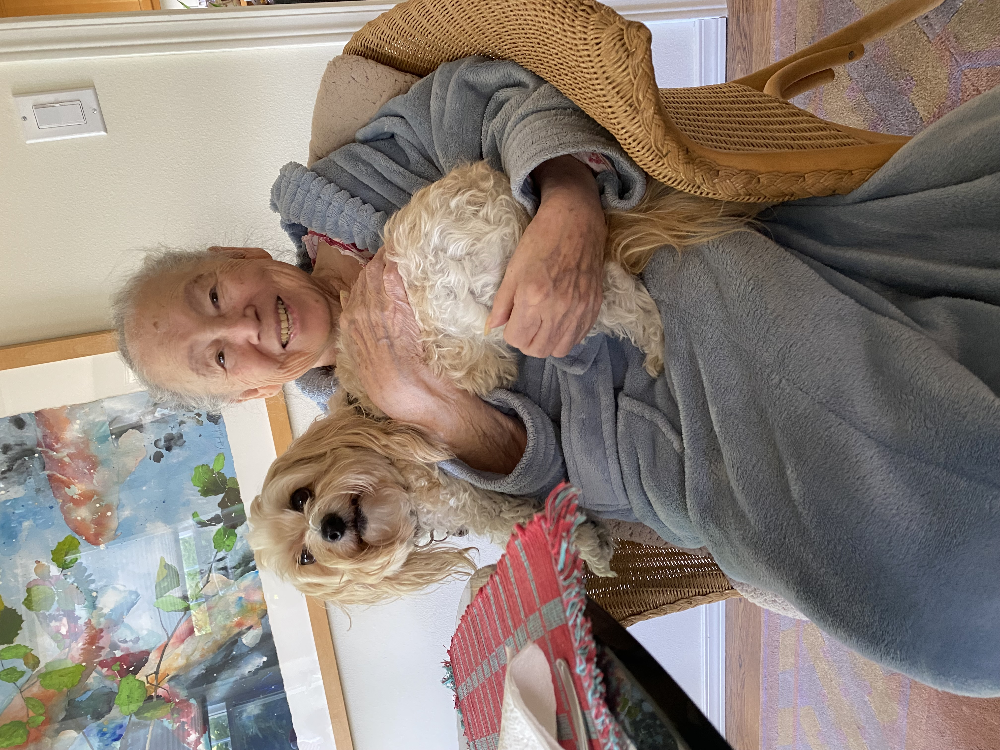

Tillie!
This is my dog Tillie! She is turning 5 later this year and is super playful. She especially loves going on hikes and playing with her toy hippo.

Maya!
This is Maya! She is the biggest pup out of the bunch and is such a sweetheart. She loves sleeping and socks.

Lilac!
This is Lilac, the old lady of all the dogs. She is around 14 years old, but she always has had an old soul. Sleeping is her favorite pastime. Her brother is Jake.

Jake!
This is Jake, Lilac's brother and the only boy out of 4 dogs. He loves hedgehogs and being grumpy. Seeing him is a rare occasion, as he enjoys staying in his hideouts and sleeping.